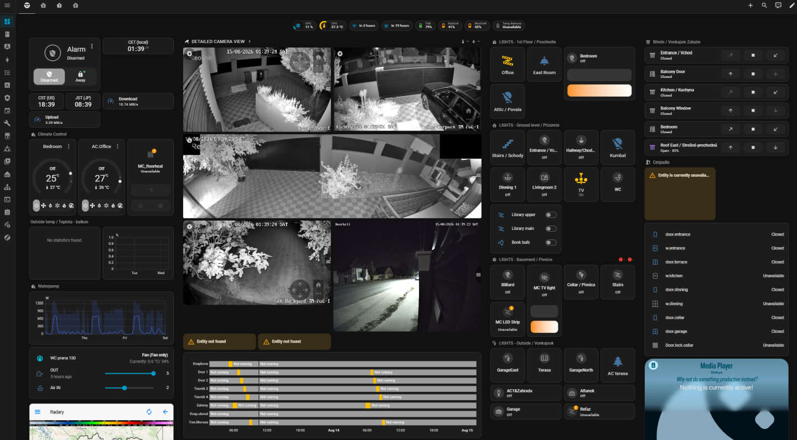

With all that in mind, I started my all-in-one-place home automation research with clear requirements for reliability (using the best devices for specific job), to stabilize my wired and wireless network, to have one dashboard with all my devices in one place, having had one place for all automations which will not conflict, having primarily local control instead of cloud or over-the-internet, limit number of energy hungry wifi devices and cover all corners of the house with most effective connection type (three stories house with thick steel reinforced concrete walls).
All those requirements call for multiple changes from IoT ecosystems, through all of networking, wireless coverage redesign, LAN redesign, power wiring redesign with the focus on redundancy and much more that I did not foresee at that time. The more I learned, the more I knew, the more changes I had to plan, more to implement, which created new set of problems to deal with and learn and research again.

This is when I stumbled onto Home Assistant, which launched me into a neverending cycle of research → implement → fail → pull hair → try again → fail again → finally win → just to start all over again. Needless to say, my hair never recovered.
Despite all, over the course of several years I mostly successfully:
- Migrated from DECO mesh to more stable managed Ubiquiti AP network
- Moved all IoT to their own VLAN
- Adopted all devices into Home Assistant
- migrated to ZHA or Zigbee2MQTT (~100 devices) for stability
- migrated to Z-wave (~10) for range
- migrated to Thread for tinkering mostly (less than 10 devices)
- incorporated surveillance solution into HA
- Re-wired my home to enable UPS backup of the whole network
- Attached NAS to host specific services as well as DATA
- Enabled the control of all interior lights + added control and the lights itself along the whole garden and outdoor
- Placed a dedicated tablet on livingroom's wall with dashboard for all devices in the house, including:
- Camera live feeds
- Weather radar with map
- All switches and lights with current state
- All sensors with current states
- Power characteristics and actual consumption
- Upcoming holidays and events
- Shutters and blinds positions with control
- Watering state
- ...and so much more

So overall, I ended up with unified control, reliable network, 95% of error free operations translating in 96% not annoyed wife (she has a 1% tolerance). Is this all rainbows and unicorns? Definitely not, but it's already so much more than what I envisioned at the beginning of the journey.

And even though I feel the journey just began, it is rewarding and I'm genuinely excited about how things are progressing and how much I'm learning on the way. I have a specific outcome in mind where I want to land eventually with this, but that will be for another article...